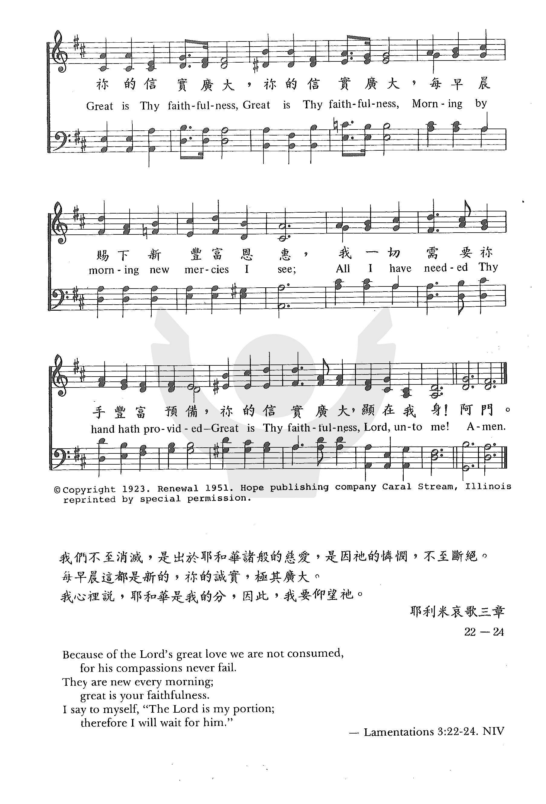

0348 Great Is Thy Faithfulness _Thomas
O. Chisholm 祢的信實廣大 FAITHFULNESS
▲
| 簡介
Great Is Thy Faithfulness |
| Written as a meditation on
Lamentations 3:22–23, this text is one of the few hymns among the 1200
poems by this Methodist writer and pastor that has gained much currency.
The tune that appears here was composed especially for these words, and
the pairing has proved enduring. |
|
|
18. 你的信實廣大， (Great is Thy faithfulness)
|
1 Great is thy faithfulness, O God
my Father.*
There is no shadow of turning with thee.
Thou changest not, thy compassions, they fail not.
As thou hast been thou forever wilt be.Refrain:
Great is thy faithfulness!
Great is thy faithfulness!
Morning by morning new mercies I see.
All I have needed thy hand hath provided.
Great is thy faithfulness, Lord, unto me!
2 Summer and winter, and springtime and harvest,
sun, moon, and stars in their courses above,
join with all nature in manifold witness
to thy great faithfulness, mercy, and love. [Refrain]
3 Pardon for sin and a peace that endureth,
thine own dear presence to cheer and to guide,
strength for today and bright hope for tomorrow;
blessings all mine, with ten thousand beside! [Refrain]
*Alternative texts: “O God my Mother” or “O God Creator”
Source: Voices Together #419
|
你的信實廣大，我神我天父，
在你永遠沒有轉動影兒；
永不改變，父神每天施憐憫，
無始無終上主，施恩不盡。
春夏秋冬四季，有栽種收成，
日月星辰時刻運轉不停；
宇宙萬物都見證造物主宰，
述說天父豐盛，信實，慈愛。
你赦免我罪過，賜永遠安寧，
你常與我同在，安慰引領；
求賜今天力量，明天的盼望，
從天降下恩典，福樂無窮。
副歌：
你的信實廣大，你的信實廣大，
清晨復清晨，更經歷新恩；
我所需用你恩手豐富預備，
你的信實廣大，顯在我身。
|


http://sooopu.com/html/300/300910.html
 |
| |
|
http://www.hymncompanions.org/Sep/04/stream.php
祢信實何廣大，我神我天父，祢永遠不離棄愛祢的人，
祢永世不改變，滿有憐憫恩，昔在今在永在，我主我神。
春夏秋冬循環，栽種又收成，日月星辰，時刻循軌運行，
天地宇宙萬物，皆同作見證，述說我主信實，慈愛永恆。
祢赦免我罪愆，賜我永平安，祢常與我偕行，安慰扶援，
日日加力，更賜我光明美盼，祢沛賜我恩惠，豐厚無限。
（副歌）
祢信實何廣大！祢信實何廣大！清晨復清晨，主愛日更新；
我一切所需用，祢都已預備，祢信實何廣大，顯在我身。
 (請點耳機收聽)
(請點耳機收聽)
「祢信實何廣大」沒有戲劇性的故事背景，它是戚曉睦（Thomas O.Chisholm 見三月三十一日）每晨靈修生活的體驗：日月星辰時序運轉，神的大愛和信實卻永不改變。

1923年，有一天他讀到耶利米哀歌3:22,23
「我們不至消滅，是出於耶和華諸般的慈愛，是因他的憐憫，不至斷絕。
每早晨這都是新的。你的誠實極其廣大。」
雅各書1:17 「各樣美善的恩賜，和各樣全備的賞賜，都是從上頭來的，從眾光之父那裡降下來的。在他並沒有改變，也沒有轉動的影兒。」
他驟然間警覺到在他的生命中，充滿了神的慈愛和信實，深受感動之餘，他寫下了這首詩；隨同其他的詩，一併寄給他的朋友任英（William
M. Runyan,見一月廿一日），請他譜曲。
任英十分喜愛這首詩，他虔誠地求神給他智慧，讓他所作的曲調能表達詩中的信息。
這首詩告訴我們，自然界彰顯神的信實，春夏秋冬，日出日落，日月星辰各就本位，按時運轉，絲毫不差。神對祂的子民，每日賜下恩典，一切需要，祂都豐富預備。
最初這首詩歌並未受人注意。 1942年，慕迪聖經學院院長賀敦博士（Dr.Will H. Houghton）邀請謝伯偉（George Beverly Shea,
見二月十五日）參加每晨十五分鐘的的電台節目「教堂聖詩」（Hymns
from the Chapel）。 當時葛理翰還在惠敦聖經學院就讀，經常收聽此節目，因此日後葛理翰邀謝伯偉同工。
1954年，這首詩歌經葛理翰佈道團推介，大為流行，也常有人在婚禮中演唱。
慕迪聖經學院的師生都諳此詩，因它是院長賀敦博士的至愛，經常在晨會或崇拜時唱這首聖詩，且每逢校友會時，也必唱此詩。
中英文聖詩集參考
英文歌名 Great
Is Thy Faithfulness
頌主新歌 70
頌主新歌(中英雙語) 70
教會聖詩 7
生命聖詩 18
新聖詩 132
歡欣讚美 139
聖徒詩集 452
聖詩 18
讚美 7
恩頌聖歌 30
世紀讚頌 53
頌主聖詩 23
青年聖歌I 4
校園詩歌I 2
讚美詩(新編)補充本 16

http://www.xueshengshi.com/?p=878
简介（一） （来源：《岁首到年终》）
Thomas O. Chisholm, 1866 – 1960
每早晨这都是新的。祢的信实，极其广大。（哀3:23）
这是先知耶利米眼见他的国家衰落以后，最后沦为仇敌的奴隶所做的见证。使徒保罗在他为基督而经过许多严刑审问和危险以后，也见证说：「神是信实的」。（林前1:9）多希奇，许多人受到极大的苦难之后仍然赞美夸耀神的信实。神的信实并不因我们的信心丧失而改变，「我们纵然失信，祂仍是可信的，因为祂不能背乎自己」（提后2:13），这就是说，神的信实并不因我们的信心丧失而一同丧失，不过，我们信心的丧失将夺去神应许给予我们的祝福，不要靠你的信心，还是要靠神的信实。
近代许多福音诗歌，都绕着「神的慈爱」或「神的信实」为主题，而产生的背景几乎都有一个特别戏剧性之经历。此首诗歌祇是作者每天早晨灵修与神同行，而体察出「神的信实」真是广大的一般经历。
Tomas O.Chisholm 1866 年
7 月 29 日生于 Kentucky 州的 Franklin，十六岁开始就在他毕业的小学当老师。廿一岁即担任当地新闻周刊的副编辑。廿七岁在
Dr.H.C.Morrison 的布道大会中决志信主，后来受 Dr.Morrison 之邀，迁居至 Louisville
出任其出版社之经理。按牧后在卫理公会服事不久，因身体欠佳而辞职。一生共作了一千二百首诗。
此诗乃慕廸圣经学院院长 Dr.W.ill Houghton 最喜爱之诗歌。1954 年 Billy Graham 布道大会使用它之后，更广泛地流传出去。
1 祢的信实广大，我神我天父，在祢永远没有转动影儿，
永不改变，父神每天施怜悯，无始无终上主，施恩不尽。
2 春夏秋冬四季，有栽种收成，日月星辰时刻运转不停，
宇宙万物都见证造物主宰，述说天父丰盛、信实、慈爱。
（副歌）
祢的信实广大，清晨复清晨，更经历新恩，
我所需用祢恩手丰富预备，祢的信实广大，显在我身。
＊信心之赌注是将一切都押在神的信实上。── 潘霍华
http://www.congsing.org/great_is_thy_faithfulness.html
Thomas O. Chisholm, 1923
Text and tune © 1923. Renewal 1951, Hope Publishing Co.
Addressed to God
|
Great is thy faithfulness, O God my Father; |
|
|
there · · · · · · · · · · |
James 1:17 |
|
thou · · · · · · · · · · |
Lam. 3:22 (KJV) |
|
as · · · · · · · · · · |
Heb. 13:8; Ps. 102:27; Mal. 3:6 |
|
Great is thy faithfulness! Great is thy faithfulness! |
Lam. 3:23 |
|
Morning
· · · · · · · · · · |
|
|
all · · · · · · · · · · |
Lam. 3:24; 1 Tim. 6:17 |
|
Great
· · · · · · · · · · |
Ps. 40:11 |
|
|
|
|
Summer and winter and springtime and harvest, |
Gen. 8:22; Acts 14:17 |
|
sun, · · · · · · · · · · |
Judg. 5:20; Ps. 19:5; Ps. 104:19 |
|
join · · · · · · · · · · |
Rom 1:20 |
|
to · · · · · · · · · · |
Ex. 34:6 |
|
Great is thy faithfulness! etc. |
|
|
|
|
|
Pardon for sin and a peace that endureth, |
1 John 1:9; Ps. 72:7 |
|
thine · · · · · · · · · · |
Mark 13:11; Acts 13:52, 2 Tim.1:14 |
|
strength · · · · · · · · · · |
Ps. 59:16; Zech. 9:12; Heb. 6:18 |
|
blessings · · · · · · · · · · |
|
|
Great is thy faithfulness! etc. |
|
We all know of marriages that fail after twenty years of seeming felicity.
Faithfulness, it seems, cannot be gauged merely by past performance. Yet, we
know far fewer marriages that end badly after forty years of commitment. A
company with ten years of increased stock value may or may not be a safe
investment, but the company whose stock has continually grown for the past
fifty years certainly is. So, while we cannot speak of mortal faithfulness
with certainty based merely on past performance, we know that the longer the
past the greater the certainty. When speaking of divine faithfulness, the past
is infinitely long. And there we have other means of demonstrating security
too. Thomas Chisholm explores all of these means in the hymn printed above.
Using a refrain in a hymn on faithfulness is a stroke of formal wisdom—that
which comes back again and again is always considered faithful. Here, the
refrain is a paraphrase from Lamentations, following Chisholm’s King James
Bible. But the refrain’s third line seems to draw more broadly on the
scriptural idea of God’s continual provision. And the first-person ending of
the refrain is particularly important, for God may be faithful to the Earth
(as we learn in the second stanza) and faithful to his people in general, but
he is also faithful to each of his children as individuals.
The subjects of the three stanzas may seem haphazard to the casual
reader. The first seems only a slight modification of the refrain. The second,
a dactylic list of natural objects and events, may seem out of place in a hymn
on God’s faithfulness to his people. And the third stanza, which dwells more
on personal experience than outer proof of God’s faithfulness may carelessly
be judged as a piece of pietistic ephemera.
But the first stanza is not quite the refrain. It quotes directly from
James and thereby makes clearer the material of the passage in Lamentations.
More importantly, however, it makes an appeal to God’s character. What if the
husband and wife had it knit in the very material of their being to be
faithful to one another? What if the business were protected by an infinite
supply of resources and never-failing investment savvy? Then, no matter how
long or short the period of past performance, we could trust both the marriage
and the business to last forever. Chisholm appeals first, before we even meet
the refrain, to God’s character rather than to his past performance. When we
hear about it in the refrain (“all I have needed thy hand hath provided”)
we are more impressed by it because invariability plus past faithfulness
equals future faithfulness.
The second stanza is not merely a set of natural objects and events.
They are all directly related to the regular pattern of time as it appears on
our globe. We may have missed this in first reading because so few of us now
think about the sun, moon and stars as chronological devices. But Chisholm’s
“courses above” make it clear that he is thinking in these terms. Indeed, all
nature behaves with clockwork regularity that testifies to God’s faithfulness.
He holds all nature in a basically predictable pattern to teach us about his
own predictability.
After demonstrating that God’s character is changeless, and that we can
apprehend his changelessness in the behaviour of nature, Chisholm turns
predictably to the “me” of the refrain’s last line. Stanza 3 catalogs God’s
faithfulness to the individual believer.
The poem’s natural rhythm is easily overlooked because of the tune’s
steady triple meter, which tends to impose its own accentuation on the poem,
but a quick scan of phrases like “O God my father,” “there is no shadow,” and
“to thy great faithfulness” will show the poem’s rhythmic variability. In
other phrases, when the subject demands it, the poem falls back into steady
rhythm. Consider the first three lines of the second stanza (about the
invariability of nature) or the first line of the third (about God’s pardon
and peace).
The tune FAITHFULNESS was
written for this text at Chisholm’s request and is part of what makes the hymn
so beloved. The refrain with its heightened repetition, accented final phrase,
and prominent fermata usually generates good singing even from more sluggish
congregations. The rhythm of the first two measures appears regularly
throughout the stanza and is then modified in the first two measures of the
refrain, becoming more animated as dotted quarter gives way to dotted eighth.
The rhythm itself is faithful, coming back in its original form at the climax
of the refrain.

BY C. MICHAEL HAWN
"Great Is Thy Faithfulness"
Thomas O. Chisholm
The United Methodist Hymnal, No. 140
Thomas O. Chisholm
Great is thy faithfulness, O God my Father;
There is no shadow of turning with thee;
Thou changest not, thy compassions, they fail not;
As thou hast been, thou forever wilt be.
Great is thy faithfulness! Great is thy faithfulness!
Morning by morning new mercies I see;
All I have needed thy hand hath provided;
Great is thy faithfulness, Lord, unto me! *
A native of the small Kentucky town of Franklin, Thomas Obediah Chisholm
(1866-1960) was born in a log cabin. He lacked formal education. Nevertheless,
he became a teacher at age sixteen and the associate editor of his hometown
weekly newspaper, the Franklin Advocate, at age twenty-one.
In 1893 Chisholm became a Christian through the ministry of Henry Clay
Morrison, the founder of Asbury College and Seminary in Wilmore, Kentucky.
Morrison persuaded Chisholm to move to Louisville where he became editor of
the Pentecostal Herald. Though he was ordained a Methodist minister in 1903,
he served only a single, brief appointment at Scottsville, Kentucky, due to
ill health. Chisholm relocated his family to Winona Lake, Indiana, to recover,
and then to Vineland, New Jersey, in 1916 where he sold insurance. He retired
in 1953 and spent his remaining years in a Methodist retirement community in
Ocean Grove, New Jersey.
By the time of his retirement, he had written more than 1200 poems, 800 of
which were published. They often appeared in religious periodicals such as
the Sunday School Times, Moody Monthly, and Alliance Weekly. Many of these
were set to music.
Hymnologist Kenneth Osbeck provides the background for "Great Is Thy
Faithfulness." Chisholm had sent a number of his poems to the Rev. William H.
Runyan (1870-1957), a musician with the Moody Bible Institute and one of the
editors of Hope Publishing Company in Chicago. Runyan wrote of the hymn: "This
particular poem held such an appeal that I prayed most earnestly that my tune
might carry over its message in a worthy way, and the subsequent history of
its use indicates that God answered prayer. It was written in Baldwin, Kansas,
in 1923, and was first published in my private song pamphlets."
George Beverly Shea (1909-2013), the famous Canadian-born singer of the Billy
Graham Crusades, introduced this hymn to those attending the evangelistic
meetings in Great Britain in 1954. It immediately became a favorite.
A phrase in Lamentations 3:22-23 provides a basis for the refrain: "The
steadfast love of the Lord never ceases, his mercies never come to an end;
they are new every morning; great is your faithfulness."
Stanza one
emphasizes God’s unchanging nature: " . . . there is no shadow of turning with
thee;/thou changest not, thy compassions they fail not." Perhaps James 1:17
provides the scriptural basis for this concept: "Every good and perfect gift
is from above, coming down from the Father of the heavenly lights, who does
not change like shifting shadows."
In stanza two,
the natural created order, including the cycle of the seasons, bears witness
to the faithfulness of God.
The final stanza
brings the eternal, unchanging God into contact with humanity. We receive from
the presence of God "Pardon for sin and a peace that endures." Indeed, William
Runyan’s tune was the ideal musical complement to the warmth of the text. The
subtle changes in harmony and the solemnity of the melody amplify the text,
bringing the climax on the word "faithfulness" perfectly at the end of the
refrain.
This hymn appeared in many evangelical hymnals and song collections, but was
not chosen for an official Methodist hymnal until the current United Methodist
Hymnal (1989), even though the author was a Methodist. It was a very popular
hymn of the former Evangelical United Brethren Church and had been included in
their hymnals.
According to Carlton Young, "Great is thy faithfulness" was second only to "In
the garden" as the most requested hymn for inclusion in The United Methodist
Hymnal. A survey conducted in 2000 by Dean McIntyre, Director of Music
Resources, Discipleship Ministries, revealed that "Great is thy faithfulness"
remains one of the favorite hymns among United Methodists
*©1923, renewed 1951 Hope Publishing Company, Carol Stream, IL 60188. All
rights reserved. Used by permission.
Dr. Hawn is distinguished professor of church music at Perkins School of
Theology. He is also director of the seminary's sacred music program.

by Eric
Wyse on Wednesday, January 01, 2014 at 7:00 AM
The words of many of our favorite hymns are born out of life-changing
experiences.
Charles Wesley composed the joy-filled "And Can It Be" after his
dramatic, personal conversion experience. And Horatio Spafford penned
the words of comfort found in "It Is Well with My Soul" after the tragic
death of his children in a shipwreck over the Atlantic Ocean.
On the other hand, the words of some hymns spring not from a traumatic
occurrence in the writer's life but in the midst of the daily routine.
That is just the case in the writing of one of the 20th century's most
loved hymns: "Great Is Thy Faithfulness."
A School Teacher Turned Prolific Poet
Thomas Chisholm was born in a simple log cabin in Franklin, Kentucky, in
1866. Lacking a high school education or any college training, he became
a school teacher at the age of 16 and later entered the newspaper
business.
The following years found him ordained a pastor, but poor health forced
him to leave the ministry. After a time of recuperation, he moved to New
Jersey to work as an insurance agent.
A prolific writer of poetry, he sent a collection of his poems in 1923
to his good friend William Runyan, a musician associated with Chicago's
Moody Bible Institute, who also worked for a hymnal publishing company.
Melody Forms Out of A Simple Prayer
While on a trip to Baldwin, Kansas, Runyan leafed through the poems sent
by Chisholm and was immediately taken in by the depth of meaning and
lyrical beauty of the words found in the poem "Great Is Thy
Faithfulness."
Years later, Runyan recalled, "This particular poem held such an appeal
that I prayed most earnestly that my tune might carry over its message
in a worthy way."
Out of a simple prayer, Runyan's melody took shape, and the completed
hymn was published by Runyan that same year.
The Song Catches on with Billy Graham
Due to Runyan's association with Moody Bible Institute, "Great Is Thy
Faithfulness" became a favorite with the students and faculty alike and
has become the Institute's unofficial college hymn.
Yet, it was slow to catch on in churches across the United States until
Billy Graham began to include the hymn in his crusades. It was
introduced to the people of Great Britain during Graham's crusade there
in 1954 and has since become one of England's most popular hymns.
An Explanation of the Poetry
The hymn's first verse is a simple expression of God's unchanging
faithfulness, based on Lamentations 3:22 (KJV): "It is of the LORD's
mercies that we are not consumed, because his compassions fail not."
Verse two continues with an expression of God's faithfulness to us in
the natural world He created—the changing of the seasons, the movements
of the celestial bodies—all joining together in praise to their Creator.
The hymn culminates in the final verse with the testimony of peace that
comes through redemption, God's abiding presence in our daily lives, and
the blessed hope of heaven.
The refrain echoes the infinite faithfulness of God to extend mercy and
compassion: "They are new every morning: great is thy faithfulness"
(Lamentations 3:23, KJV).
Chisholm's Thoughts on the Hymn
Looking back on the writing of the hymn, Chisholm recalled in 1941, "My
income has not been large at any time due to impaired health in the
earlier years which has followed me on until now. Although I must not
fail to record here the unfailing faithfulness of a covenant keeping God
and that He has given me many wonderful displays of His providing care,
for which I am filled with astonishing gratefulness."
Lyrics to the Hymn
Great is Thy faithfulness O God, my Father; There is no shadow of
turning with Thee. Thou changest not, Thy compassions, they fail not; As
Thou hast been, Thou forever wilt be.
Summer and winter, and springtime and harvest, Sun, moon and stars in
their courses above, Join with all nature in manifold witness, To Thy
great faithfulness, mercy and love.
Pardon for sin and a peace that endureth, Thine own dear presence to
cheer and to guide; Strength for today and bright hope for tomorrow,
Blessings all mine with ten thousand beside!
Great is Thy faithfulness! Great is Thy faithfulness! Morning by morning
new mercies I see; All I have needed Thy hand hath provided; Great is
Thy faithfulness, Lord, unto me!
Article
courtesy of Mature
Living magazine.
https://hymnary.org/text/great_is_thy_faithfulness_o_god_my_fathe
Thomas Chisholm, the author of "Great Is Thy Faithfulness" and 1200 other poems
was born in a log cabin in Kentucky in 1866, and he lived a pretty unremarkable
life: he worked as a school teacher, a newspaper editor, and insurance agent,
then he retired and spent his remaining days at the Methodist Home for the Aged
in New Jersey. Unlike many hymns that have heart-wrenching stories behind them
(for instance "It Is Well With My Soul"), "Great Is Thy Faithfulness" is
inspired by the simple realization that God is at work in our lives on a daily
basis. He wrote, "My income has not been large at any time due to impaired
health in the earlier years which has followed me on until now. Although I must
not fail to record here the unfailing faithfulness of a covenant-keeping God and
that He has given me many wonderful displays of His providing care, for which I
am filled with astonishing gratefulness." The hymn reminds us that God doesn't
only work in dramatic or miraculous ways, but also in simple, everyday ways. It
also reminds us that Jesus has never failed us in the past, so we have no reason
to doubt his faithfulness in the future. --Greg Scheer, 1994
Thomas Chisholm, author of “Great is Thy Faithfulness” led a pretty ordinary
life. He did not write this hymn during a period of intense grief or after
encountering God in a profound way. Instead, he found truth in the words he
encountered in Lamentations 3:22-23: “Because of the LORD’s great love we are
not consumed, for his compassions never fail. They are new every morning; great
is your faithfulness.” Jeremiah, on the other hand, was in tumultuous
circumstances when writing Lamentations. The people to whom he prophesied did
not listen, and he was ostracized and completely alone because of what God
called him to do. He also lamented the consequences of their faithlessness. God
allowed them to be conquered by the Babylonians, resulting in their entire world
being laid to waste. But in the midst of that utter devastation, Jeremiah still
offers them hope on the horizon: they are not completely destroyed because of
the LORD’s compassion and faithfulness, and in the morning, after this “dark
night of the soul,” things will be better. So whether we are at a place in our
lives where everything is pretty ordinary, or whether we are in a period of
grief: no matter what our circumstances, God never changes and is faithful to
us, sustaining us in his compassion and faithfulness each and every day.
Text:
This hymn was written in 1923 by poet Thomas Chisholm, author of more than 1,200
poems during his lifetime. He mailed it to his friend William Runyan, who set it
to music.
The text of the hymn is consistent to what was originally written, other than
one minor change in the third stanza from “thy” to “thine” by the United
Methodist Hymnal (1989) and Baptist Hymnal (1991) which is just a
matter of tradition and preference. The New Century Hymnal (1995)
completely modernizes all direct addresses to You and Your. The drawback to this
is that, in order to complete the rhyme in stanza one, they modify “with thee”
to “we see,” which changes the meaning slightly from complete emphasis on God to
the agency of those speaking. The NCH also changes “Father” to “Creator,” which
actually helps the transition to stanza two because of its focus on creation
(and occasionally is not sung because it does not seem to fit with the other
stanzas).
Tune:
Sung to the tune FAITHFULNESS by William Runyan, written specifically for this
poem and published by Hope Publishing Company. Runyan wrote: “This particular
poem held such an appeal that I prayed most earnestly that my tune might carry
over its message in a worthy way, and the subsequent history of its use
indicates that God answers prayer.”
The tune has a wide appeal across diverse congregations who prefer different
musical styles. It has a repeated refrain similar to the repetition in modern
praise songs, but retains the structural elements of a traditional hymn.
When/ Why How:
Although sung at any time of the year, it is often chosen for both funerals and
weddings as a testament to God’s unchanging nature no matter the circumstance.
It could be sung with songs of hope, such as “Tis so Sweet to Trust in Jesus,”
or hymns of grief and comfort such as “Be Still My Soul.” If one wants to focus
on the greatness of God, John F. Wilson created a medley in
which he paired this hymn with “Great is the Lord.” Cindy Berry also has a creative
medley of “Great is Thy Faithfulness” partnered with “My Jesus, I Love Thee”
in 4/4 time.
Jasmine Smart,
Hymnary.org
https://en.wikipedia.org/wiki/Thomas_Chisholm_(songwriter)
From Wikipedia, the free encyclopedia
Thomas Obadiah Chisholm (pronounced ;
July 29, 1866 – February 29, 1960) was an American songwriter who wrote
several prominent Christian hymns.
Thomas O. Chisholm was born in Franklin,
Kentucky on July 29, 1866 in a log
cabin and became a teacher at age sixteen. In 1893, aged 27, Chisholm
had a Christian conversion experience during a revival in Franklin led by
Dr. Henry
Clay Morrison. He served as a Methodist minister
for only one year before resigning due to poor health. In 1909 Chisholm
began working as a life
insurance agent in Winona
Lake and Vineland,
New Jersey.
Chisholm wrote over 1,200 sacred poems over
his lifetime, which appeared in many Christian periodicals, and he served
as an editor of the Pentecostal Herald in Louisville for a period.
In 1923 at age fifty-seven, Chisholm wrote the popular song Great
Is Thy Faithfulness which he submitted to William
M. Runyan who was affiliated with the Moody
Bible Institute and Runyan set the song to music. Towards the end of
his life, Chisholm retired to the Methodist Home for the Aged in Ocean
Grove, New Jersey and died in 1960.[1][2]
References[edit]
-
^ Kenneth W. Osbeck, Amazing
Grace: Illustrated Stories of Favorite Hymns (Kregel
Publications: 1999), pg. 14-15
https://www.churchinmarlboro.org/hymns/Living%20for%20Jesus.htm
【活著為耶穌 】
"GREAT IS THY FAITHFULNESS"
hymnstudiesblog
"His compassions fail not. They are new every morning; great is Thy
faithfulness" (Lam. 3.22-23)
INTRO.:
A song that is taken from this passage and extols the faithful character of God
in showing His compassions is "Great Is Thy Faithfulness" (#23 in Hymns
for Worship). The text was written by Thomas Obadiah Chisholm (1866-1960).
He produced lyrics for many hymns, the best-known of which is probably "O To Be
Like Thee." The tune (Faithfulness) was composed by William Marion Runyon, who
was born at Marion, NY, on Jan. 21, 1870, the son of William White and Hannah
Orcutt Runyon. When he was a teenager his father, a Methodist minister, moved
the family to Marion, KS, where the teenage William studied music and became
quite successful as a teacher while still a young man.
In 1891, the younger Runyon himself became a Methodist minister and for twelve
years worked with various churches in Kansas. In 1903 he was appointed
evangelist for the Central Kansas Methodist Conference. Twenty years later, in
1923, he received a number of poems, including "Great Is Thy Faithfulness," from
Chisholm, who was then living in Vineland, NJ, and turned several of them into
hymns. The music for "Great Is Thy Faithfulness" was produced when he was at
Baldwin, KS, and the song first appeared in 1923 in one of his private song
pamphlets, Songs
of Salvation and Service, published in Chicago, IL. Runyon and Chisholm
were devoted friends and collaborated on some 20 to 25 hymns. Both said that
there were no special circumstances surrounding the origin of either the words
or the music of this one.
Because of increasing deafness, Runyon resigned his work in Kansas later in 1923
and became associated with John Brown University in Sulphur Springs, AR, where
he also served as minister of the Federated Church, editor of the Christian Workers’
Magazine, and a songbook compiler. Then from 1925 until his
retirement in 1948, when he received an honorary Doctor of Letters from Wheaton
College in IL, he lived in Chicago where he worked with both Moody Bible
Institute and the Hope Publishing Company, which renewed the copyright to the
hymn in 1951. Seemingly slow to catch on at first, "Great Is Thy Faithfulness"
quickly became a popular favorite after its appearance in The
Baptist Hymnal of 1956. Runyon’s death occurred on July 29,
1957, at Pittsburg, KS.
Among hymnbooks published by members of the Lord’s church during the twentieth
century for use in churches of Christ, the first in which I have seen the hymn
was the 1977 Special
Sacred Selections edited by Ellis J. Crum. Since then, it may
be found in the 1986 Great
Songs Revised edited by Forrest M. McCann; the 1990 Songs
of the Church 21st C. Ed. and the 1994 Songs
of Faith and Praise both edited by Alton H. Howard; and the
1992 Praise
for the Lord edited by John P. Wiegand; in addition to Hymns
for Worship and the 2007 Sacred
Songs of the Church edited by William D. Jeffcoat. All songs
written before 1923 are now in the public domain. Some songs written after 1923
go into the public domain after 75 years, but others can remain copyrighted for
various reasons. According to Hope Publishing Co.’s website, "Great Is Thy
Faithfulness" is still under copyright protection by Hope until 2019.
This hymn describes several reasons why we can trust in God’s faithfulness.
I. From stanza 1 we learn that God’s faithfulness is manifest generally in His
unchangeable nature.
"Great is Thy faithfulness, O God, my Father; There is not shadow of turning
with Thee.
Thou changest not, Thy compassions, they fail not; As Thou has been, Thou
forever wilt be."
A. There is no shadow of turning or fickleness with God: Jas. 1.17
B. His nature, especially His ability and willingness to keep His promises,
does not change: Mal. 3.6
C. Because, as He has been He ever will be, we can trust His faithfulness: 1
Cor. 10.13
II. From stanza 2 we learn that God’s faithfulness is manifest materially in all
the physical blessings of nature that He has given us
"Summer and winter, and springtime and harvest, Sun, moon, and stars in their
courses above
Join with all nature in manifold witness To Thy great faithfulness, mercy, and
love."
A. He has given us summer and winter, springtime and harvest, to help provide
for our needs on earth: Gen. 8.22
B. He has given us sun, moon, and stars in their courses above to provide for
signs, seasons, days, and years: Gen. 1.14-19
C. These things join with all nature in manifold witness that God is faithful:
Acts 14.15-17
III. From stanza 3 we learn that God’s faithfulness is manifest spiritually in
pardon for sin and all spiritual blessing that are found
in Christ
"Pardon for sin and a peace that endureth, Thine own dear presence to cheer and
to guide,
Strength for today and bright hope for tomorrow, Blessings all mine, with ten
thousand beside!"
A. These blessings include pardon for sin, being justified before God, and
peace that endures: Rom. 5.1-2, Phil. 4.6-7
B. They also include God’s own spiritual presence in our lives to cheer and to
guide: Eph. 1.3-7, 3.17-19
C. And they include both strength for today and a bright hope for the future:
Col. 1.3-5, Tit. 1.1-2, 1 Pet. 1.3-5
CONCL.:
The chorus reemphasizes and sums up the thought of the stanzas.
"Great is Thy faithfulness! Great is Thy faithfulness! Morning by morning new
mercies I see.
All I have needed Thy hand hath provided; Great is Thy faithfulness, Lord, unto
me!"
Each child of God can undoubtedly look at various times in his life when things
may have been rough yet remember that God was still there to help and to
comfort. Therefore, we can praise the Lord, saying, "Great Is Thy Faithfulness"!
https://hymnstudiesblog.wordpress.com/2008/06/06/quotgreat-is-thy-faithfulnessquot/
Words: Thomas Obediah Chisholm (b. July 29, 1866; d.
Feb. 29, 1960)
Music: Faithfulness (or Runyan),
by William Marion Runyan (b. Jan. 21, 1870; d. July 29, 1957)
Links:
Wordwise Hymns
The Cyber
Hymnal
Note: Since the day of Thomas Chisholm’s birth coincides (nearly a
century later) with the date of William Runyan’s death, you can see a
note about both men in the Wordwise Hymns link. The former gentleman is
also somewhat unique among the better known hymn writers in that he died
on February 29th.
This is a near perfect gospel song. The words and
thoughts are biblical and inspiring, and the tune fits the text
beautifully. The opening stanza of the hymn, and the overall theme, is
based on the words of the prophet Jeremiah in the book of Lamentations:
“Through the LORD’S mercies we are not consumed, because His
compassions fail not. They are new every morning; great is Your
faithfulness” (Lam. 3:22-23).
As the name of the book suggests, Lamentations is a series of laments
over the destruction of the city of Jerusalem (Lam. 1:1), and over the
fact that the people of Israel had been carried into captivity in
Babylon (vs. 3). The prophets had warned them for years to turn from
their idolatry and unbelief and seek the Lord, but there was little
response. Now, the blow had fallen. In great grief, Jeremiah, the
weeping prophet, stared at the ruins of his beloved city. So, was that
the end?
No. There was still a believing remnant remaining, including Jeremiah
himself. And God had promised Israel that they would experience a
restoration to their own land. The Babylonian Captivity would last only
for seventy years (Jer. 25:11). Then they would be allowed to return.
And the books of Ezra and Nehemiah show that they did. Further, there
would be a glorious future for the nation one day, under the reign of
the Messiah (Isa. 2:1-4; 9:6-7; 35:1-10).
God is faithful and trustworthy. What He promises will come to pass.
That is the basis for the encouraging words in Lamentations, and it’s
the basic theme of the hymn. The opening stanza also draws on the
promise of James 1:17.
“Every good gift and every perfect gift is from above, and comes
down from the Father of lights, with whom there is no variation or
shadow of turning.”
God “does not change like shifting shadows” (NIV); “there is never
the slightest variation or shadow of inconsistency” in Him (Philips
Paraphrase).
CH-1) Great is Thy faithfulness, O God my Father;
There is no shadow of turning with Thee;
Thou changest not, Thy compassions, they fail not;
As Thou hast been, Thou forever will be.
Great is Thy faithfulness!
Great is Thy faithfulness!
Morning by morning new mercies I see.
All I have needed Thy hand hath provided;
Great is Thy faithfulness, Lord, unto me!
In the temperate zone where I live, we have four distinct seasons.
They roll around each year, on a schedule that can be relied upon–which
is exactly what the Lord promised after the flood of Noah’s day: “While
the earth remains, seed time and harvest, cold and heat, winter and
summer, and day and night shall not cease” (Gen. 8:22).
In Thomas Chisholm’s hymn, the rolling seasons (CH-2) become a
graphic object lesson on the faithfulness of God, one which can
encourage our faith when it comes to the promised eternal salvation in
Christ (CH-3). The Lord pledges, in passage after passage, that if we
trust in the Lord Jesus Christ, and receive Him as our Saviour, our sins
will be forgiven, and we’ll receive God’s gift of eternal life (e.g. Jn.
1:12-13; 3:16; 14:6).
CH-3) Pardon for sin and a peace that endureth
Thine own dear presence to cheer and to guide;
Strength for today and bright hope for tomorrow,
Blessings all mine, with ten thousand beside!
Praise the Lord for His great faithfulness and for His trustworthy
Word!
Questions:
1) For what provision or event have you been led to praise the Lord for
His faithfulness in this past week?
2) Whom can you tell about this blessing, to encourage their faith
too?
Links:
Wordwise Hymns
The Cyber
Hymnal
https://wordwisehymns.com/2012/03/09/great-is-thy-faithfulness/